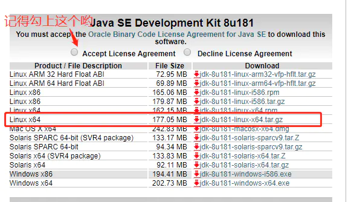
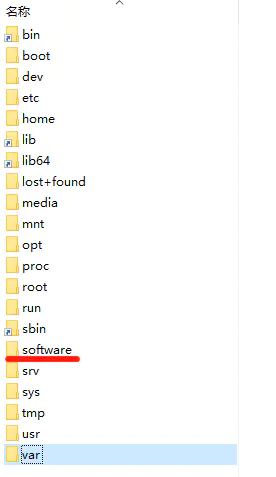
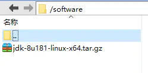
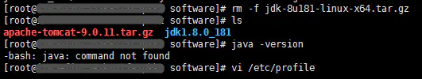
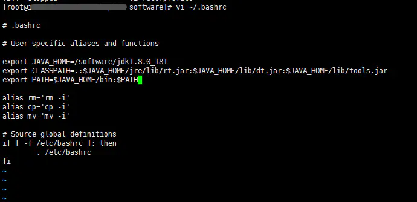
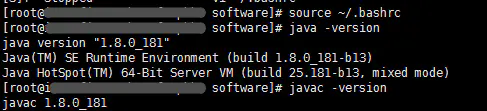

阿里云服务器搭建JAVA环境详解
二、linux下安装jdk配置环境
首先说一下linux下的几个比较重要的文件：
/etc/profile：
该文件登录操作系统时，为每个用户设置环境信息，当用户第一次登录时,该文件被执行。也就是说这个文件对每个shell都有效，用于获取系统的环境信息，如果你的计算机仅仅作为开发使用时推荐使用这种方法，因为所有用户的shell都有权使用这些环境变量，可能会给系统带来安全性问题。 这里是针对所有的用户的,所有的shell。
/etc/bashrc：
为每一个运行bash shell的用户执行此文件，当bash shell被打开时,该文件被读取。也就是说，当用户shell执行了bash时，运行这个文件。
~/.bashrc：
该文件存储的是专属于个人bash shell的信息，当登录时以及每次打开一个新的shell时,执行这个文件。在这个文件里可以自定义用户专属的个人信息，它可以把使用这些环境变量的权限控制到用户级别,这里是针对某一个特定的用户，如果你需要给某个用户权限使用这些环境变量，你只需要修改其个人用户主目录下的.bashrc文件就可以了。
为了安全考虑：建议在~/.bashrc下配置变量
1、先下载jdk，地址如下：
http://www.oracle.com/technetwork/java/javase/downloads/jdk8-downloads-2133151.html

因为阿里云服务器事先就安装好了ssh，我们可以直接xftp连上去，在根目录下新建一个software（这个随意，看你想装哪里，我一般会想将这些软件都装一个文件看起整齐，方便管理的样子。纯个人习惯），将下载好的tar.gz上传到/software/目录，如图9图10
在xshell用命令 tar -zxvf jdk-8u181-linux-x64.tar.gz 解压安装，如图11


ps：如果文件尾部不是tar.gz，而是tar.xz。那么不是tar文件需要去掉解压命令中的z，解压命令为：
tar -xvf jdk-8u181-linux-x64.tar.gz
解压之后便可删除之前传输进来的压缩包，如图12：
删除文件 rm -f jdk-8u181-linux-x64.tar.gz

2、配置环境
与Windows中配置JDK类似需要配置一下三个环境变量，上面也说过了为了安全考虑，我们就在~/.bashrc下配置变量
第一步: vi ~/.bashrc
加入下面变量（注意“=”两边没有空格）
export JAVA_HOME=/software/jdk1.8.0_181
export CLASSPATH=.:$JAVA_HOME/jre/lib/rt.jar:$JAVA_HOME/lib/dt.jar:$JAVA_HOME/lib/tools.jar
export PATH=$JAVA_HOME/bin:$PATH

第二步：source ~/.bashrc
使环境变量生效
第三步:检查
输入命令查看环境变量：
echo $CLASSPATH
echo $PATH
输入命令查看jdk的版本
java -version

ps：有时候需要重启才可以看到这些配置信息。
2021年1月22日写
~~~未完待续~~~